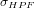
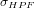

| LTPDA Toolbox™ | contents | |
Spikes in data due to different nature can be removed, if desired, from the original data. LTPDA spikecleaning detects and replaces spikes of the input AOs. A spike in data is defined as a single sample exceeding a certain value (usually, the floor noise of the data) defined by the user:
where  is the input data high-pass filtered,
is the input data high-pass filtered,  is a value defined by the user (by default is 3.3) and  is the standard deviation of
is a value defined by the user (by default is 3.3) and  is the standard deviation of  . In consequence, a spike is defined as the value that exceeds the floor noise of the data by a factor
. In consequence, a spike is defined as the value that exceeds the floor noise of the data by a factor  , the higher of this parameter the more difficult to "detect" a spike.
, the higher of this parameter the more difficult to "detect" a spike.
b = spikecleaning(a, pl)
The following parameters can be set in this method:
Random: this method substitutes the spiky sample by:
where  is a random number of mean zero and standard deviation 1.
is a random number of mean zero and standard deviation 1.
Mean: this method uses the following equation to replace the spike detected in data.
Previous: the spike is substitued by the previous sample, i.e.:
1. Spike cleaning of a sequence of random data with kspike = 2.
x = ao(plist( 'waveform', 'noise', 'nsecs',1e4, 'fs',10)); % create an AO of random data sampled at 1 Hz.
pl = plist( 'kspike', 2); % kspike = 2
y = spikecleaning(x, pl); % spike cleaning function applied to the input AO, x
iplot(x, y) % plot original and "cleaned" data

| |
Interpolating data | Data gap filling | |
©LTP Team